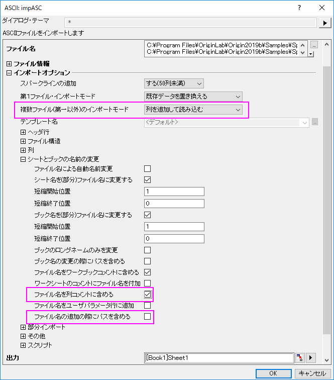
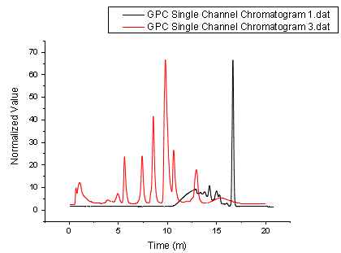
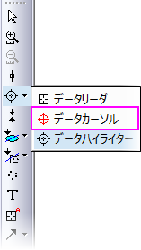
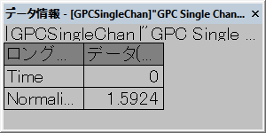
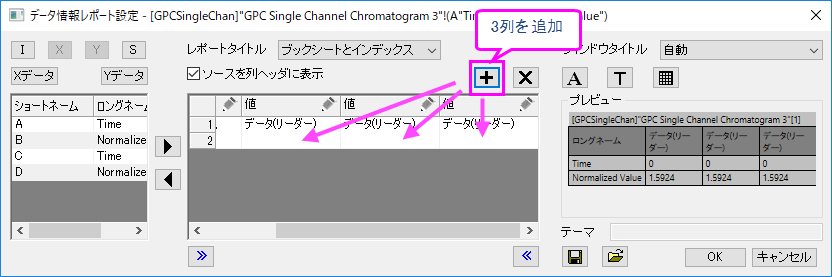
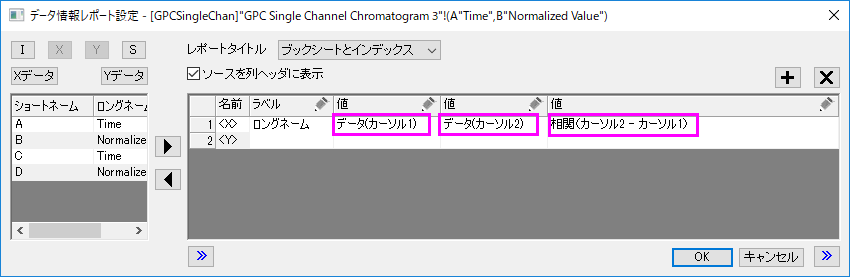
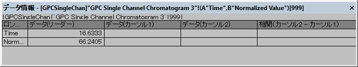
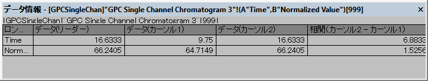
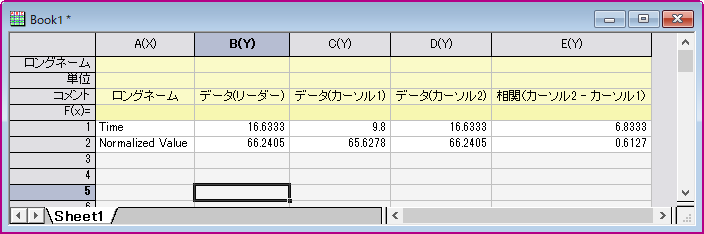

データカーソルを使用してデータ間の違いを表示
Compare-Data-by-DataCursor
概要
Originでは、カーソルツールを使用して2点間のX距離とY距離を測定することができます。同じ曲線や異なる曲線にカーソルを配置し、データ情報ウィンドウを使用してカーソル間の相対位置を表示することができます。
必要なOriginのバージョン: Origin 2019 以降
 | グラフ上の2点間に両方向の矢印を追加してラベル付けする、距離計測ツールも用意されています。
|
学習する項目
このチュートリアルでは、以下の項目について解説します。
- データ情報ウィンドウをカスタムする
- 2つのデータポイントの相対位置を読み取る
ステップ
- 新しいワークシートを用意します。
- メニューのデータ：ファイルからインポート：複数ASCII を選びます。ダイアログで、\Samples\Spectroscopy\Chromatography フォルダを開き、GPC Single Channel Chromatogram 1.dat 、GPC Single Channel Chromatogram 3.dat を選択します。ファイルの追加をクリックし、オプションダイアログを表示するのチェックボックスにチェックが入っていることを確認してOKを押します。これにより、impASCダイアログボックスが開きます。このダイアログで、複数ファイル（第一以外）のインポートモードを列を追加して読み込むとします。また、シートとブックの名前の変更ブランチのチェックボックスのファイル名を列コメントに含めるにチェックを入れ、ファイルの追加の際にパスを含めるのチェックを外します。OKをクリックして2つのファイルをワークシートにインポートします。
- 
- 全ての列を選択し、右クリックして、ショートカットメニューから列XY属性の設定：XY XYを選びます。全ての列が選択された状態で、メニューの作図：基本の2Dグラフ：折れ線と選択します。
- 
- データリーダボタンを長くクリックし、表示されたリストからデータカーソルを選択します。
- 
- データ情報ウィンドウが開きます。
- 
- データ情報ウィンドウ上で右クリックし、ショートカットメニューからユーザ設定を選びます。すると、データ情報レポート設定ダイアログが開きます。
- 列の追加ボタンを3回押して、計3列をプレビューテーブルに追加します。
- 
- 初めに追加した列の鉛筆アイコン
 をクリックしてソースをデータ（カーソル1）、列幅 = 30と設定します。OKをクリックします。
をクリックしてソースをデータ（カーソル1）、列幅 = 30と設定します。OKをクリックします。
- 2番目に追加した列の鉛筆アイコンをクリックしてソース をデータ（カーソル2）、列幅 = 30と設定します。OKをクリックします。
- 3番目に追加した列の鉛筆アイコンをクリックしてソース を相関（カーソル2 - カーソル1)、列幅 = 40と設定します。OKをクリックします。
- 
- OKボタンをクリックして、ダイアログボックスを閉じます。データ情報ウィンドウには新しい3列が表示されます。
- 
- グラフのデータポイント上でダブルクリックして最初のカーソルを追加します。次に、再度データカーソルボタンをクリックし、グラフ内でダブルクリックしてもう1つのカーソルを配置します。

Note：データ情報レポート設定ダイアログですべての列を追加したら、テーマの保存ボタン をクリックしてメニューからオプションを選択することで、設定をテーマとして保存できます。設定をグラフ（最も移植性が高い）または名前付きテーマファイル（グラフウィンドウに適用可能）に保存できます。 をクリックしてメニューからオプションを選択することで、設定をテーマとして保存できます。設定をグラフ（最も移植性が高い）または名前付きテーマファイル（グラフウィンドウに適用可能）に保存できます。
|
- 2つのデータポイントの値と相対値によって、データ情報ウィンドウの表示が更新されます。
- 
- データ情報ウィンドウ上で右クリックしてすべてコピーを選択すると、表の情報を空のワークシートに貼り付けることができます。
- 
| 任意のワークシートの行を列ラベルの行（ヘッダ）エリアに移動させるには、その行を右クリックし、…に設定や…に追加オプションのいずれかを選択します。
|